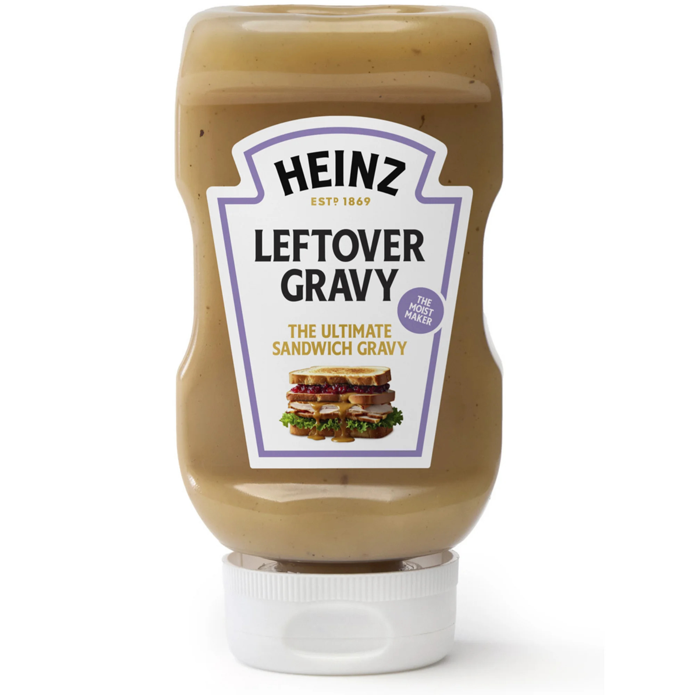

Opening Note#
We have a stubborn habit of mistaking a quick Google search for a master class. Learn one new thing and suddenly we are offering plumbers, mechanics, and anyone within range the kind of confident advice that makes real professionals sigh into their toolboxes. The truth is that every field has layers we will never see or fully understand, and most of us are lifelong amateurs in almost everything that matters. A wiser response to learning is humility rather than swagger, because every new bit of knowledge should remind us how much of the world remains unexplored and how small our part in it truly is. Now if you will excuse me, I am off to fix my toaster after watching a single YouTube video on the topic. I expect excellent results.
“We live on an island surrounded by a sea of ignorance. As our island grows, so does the shore of our ignorance.”
John Wheeler
Link Shotgun Blast#
-

Secret shame or greatest culinary weapon? - https://www.thekitchn.com/heinz-leftover-gravy-23756460
- Heinz rolled out a squeezable leftover gravy and it feels like one of those ideas that lives right on the thin line between gross and amazing that only seasonal products can pull off. On one hand it reads like a gimmick that belongs next to canned bread (amazing) and those questionable gelatin molds from old cookbooks (gross). It is exactly the sort of idea that appears once a year, confuses everyone, and might one day be something you actually reach for, though I would not put money on it. On the other hand this might be the exact tool you need when you are standing in front of the fridge building a leftover sandwich with the confidence of James Beard. It will either elevate the best part of Thanksgiving or become one of those items you quietly pretend never entered your house, and honestly that uncertainty is half the fun.
- Octopath Traveler 0 - Release Date, Preorder Bonuses, Characters, & More Details
- Octopath Traveler 0 finally has a release date, and it scratches my RPG itch just long enough to keep me alive while I wait for Elder Scrolls 6 to release sometime around the heat death of the universe. It arrives December 4th with all the character creation and slow burn development that made the original so easy to sink into. The hook this time is the sprawling cast you can recruit more than thirty characters in all plus a few familiar faces that longtime players will recognize right away. The gameplay leans into what the series does best tight turn based battles, break and boost strategy, and that satisfying rhythm of exploring towns, poking at side stories, and falling into just one more fight before bed. I am already deciding which device gets the honor of stealing my evenings in December.
- The Gravity Particle Should Exist. So Where Is It?
- Watching this video reminds me that in some fundamental ways we still have no idea how the universe works. We can describe gravity in equations, predict how the universe bends under it, and give the particle a proper name, but we cannot find the little troublemaker that is supposed to make it all work. The graviton feels like one of those elegant ideas that might be a real discovery or might be a long running inside joke among physicists. The graviton is like Bigfoot. People talk about it with great confidence, but no one seems able to take a clear photo.
Podcast Pick#
Thanksgiving is not from where you think it is. It is not pilgrims and Native Americans at Plymouth Rock. It is a dashing ladies’ home magazine editor searching for a unifying holiday in a time of turbulence. Sarah Josepha Hale spent decades campaigning for a national day of thanks and finally persuaded Lincoln to make it official, turning her editorial vision into an actual tradition. The episode leans into the idea that she shaped Thanksgiving with intention and style, which feels fitting because someone with her taste would never have signed off on those stiff pilgrim hats and giant buckles unless she was trying very hard to be polite.
From the Bottom of the Junk Drawer#
Wendy’s opened its doors on November 15, 19691, which already gives it a nice mythic feel. Dave Thomas had started in restaurant kitchens as a teenager and carried that steady, no nonsense work ethic into his own place. He named the restaurant after his daughter, shaped the patties into tidy squares to show he did not cut corners, and added Frosties because he believed every good meal deserved a small reward. As first chapters go, it was a good one.
The part that delights me is that the date also became known as Clean Out Your Refrigerator Day2. So on the exact day people were supposed to dig into the back of the fridge and toss anything suspicious, Dave Thomas opened a restaurant with fresh burgers ready to go. Now with that clean and most likely empty fridge, you had a reason to go out to eat. It feels like kismet.
I like knowing that a fast food empire was born on a day dedicated to making space. It adds a bit of poetry to those early photos of the original restaurant, all bright lights and simple menus. There is something charming about a man who believed comfort should come wrapped in simple paper and taste like it had been made with real care. Dave Thomas built something that lasted, and the rest of us got a place that shows how the odd ideas work out more often than you expect, especially when someone is bold enough to serve square burgers and a spoon worthy shake.
Your notes keep me going…#
I do not run analytics because I would rather protect your privacy than collect your data. If you enjoy what I make, I would appreciate a quick shout so I know you were here. Even better, tell me your thoughts!
Find me on 🐘 Mastodon and 🌀 Bluesky!